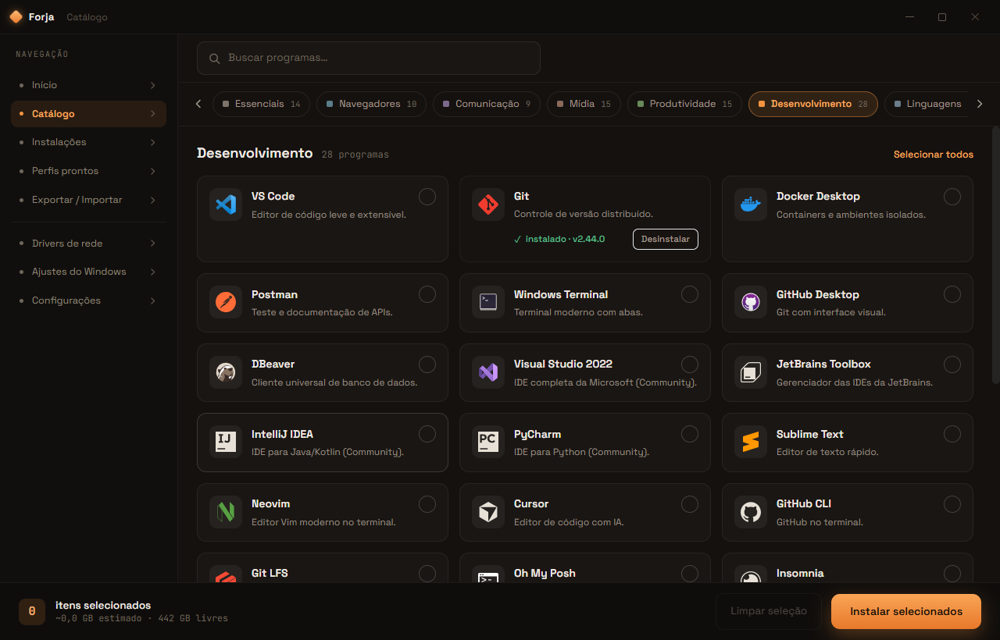

Você escolhe os programas, drivers e ajustes. A Forja baixa direto da fonte oficial e instala tudo sozinha — em silêncio.

Direto da fonte oficial — winget & npm
Um app só, sem catar instalador na internet nem clicar em “avançar” cem vezes.
Gratuito e de código aberto. Baixe, escolha e deixe a Forja trabalhar.